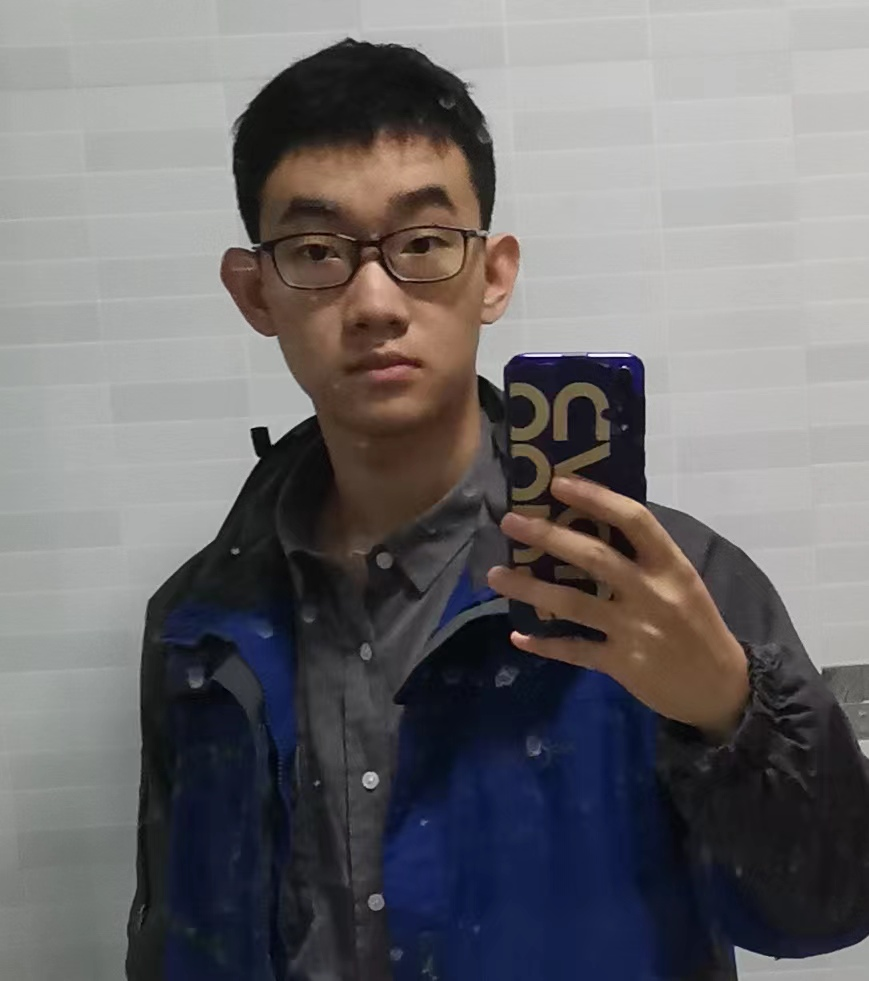

|  | B.S Student |
Currently I am an undergraduate student in the School of Electronic Engineering and Computer Science, Peking University.
I major in computer science, and minor in mathematics.
My research interests are situated in quantum computing and quantum information. More precisely, I am interested in investigating structure of problems, and applying techniques from TCS (such as complexity theory) and math (such as representation theory) to solve problems in quantum computing. I have been doing research on quantum alogorithm for algebraic problems, such as supersingular isogeny problem (the intractability of which has been the basis of a post-quantum crypto protocol SIKE.) and hidden subgroup problem (HSP). I am also interested in using theory in math and physics (such as category theory) to develop and discribe theories in quantum computing.
Quantum Algorithms For Supersingular Isogeny Problem. [pdf] with Boyang Chen, Han Luo, advised by Tongyang Li.
We made some attempts to improve existing algorithms for the supersingular isogeny problem using techniques in quantum walk, but failed due to the special structure of the problem. I wrote a survey about this problem, pointed out the hardness of the problem and explained why we failed.
I am going to hold a seminar on physics and computing, discussing the relationship between them.